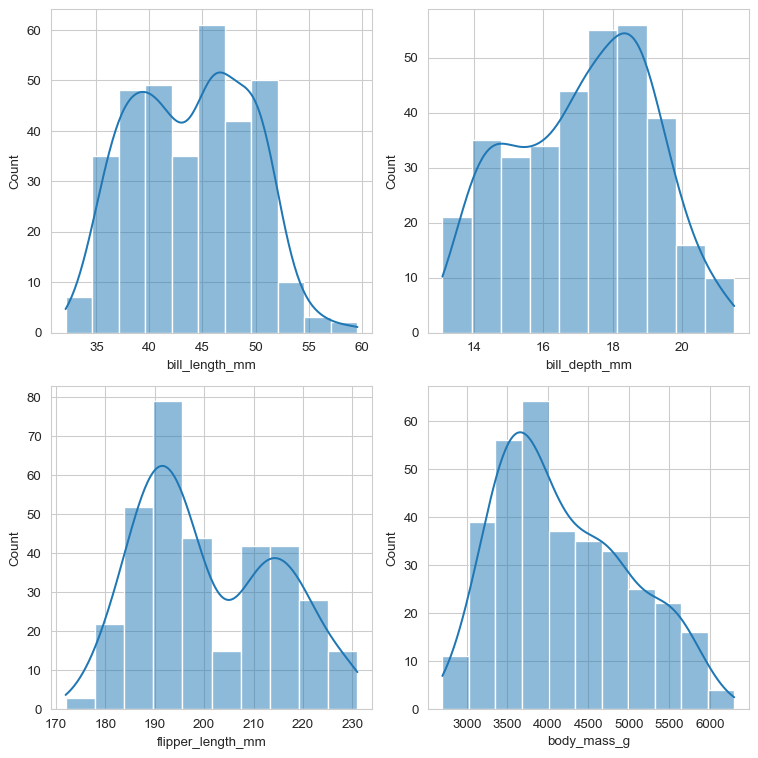
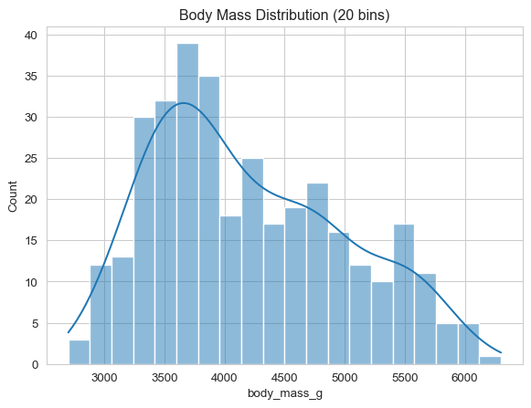
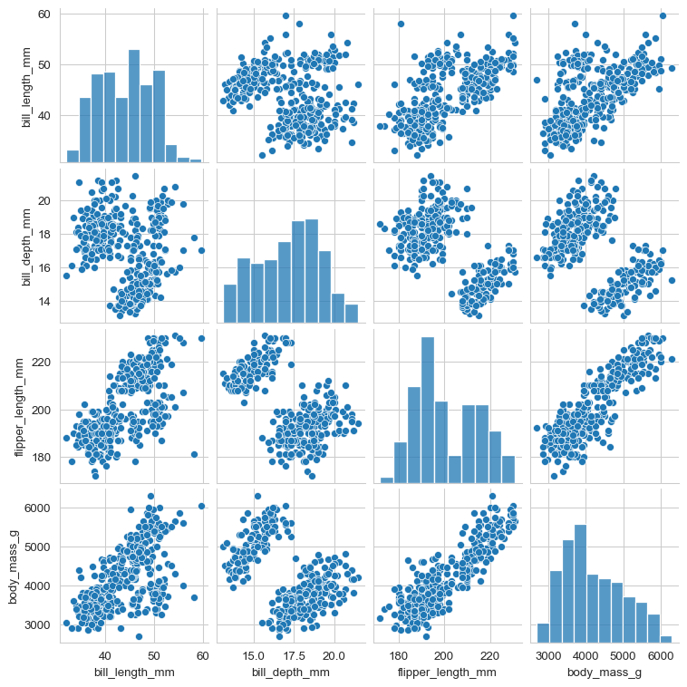
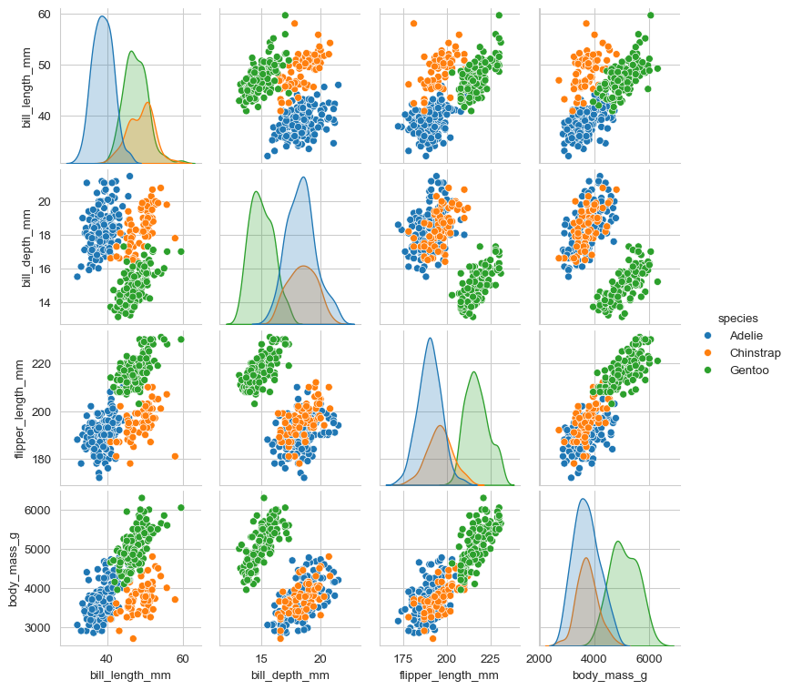
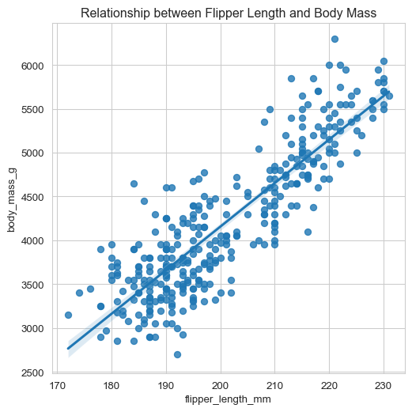
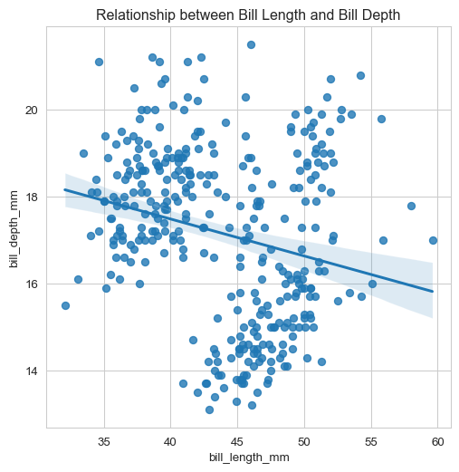
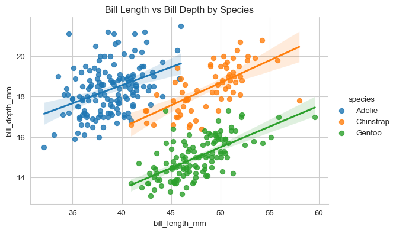

In this collaborative coding exercise, you’ll work with a partner to explore a dataset using the seaborn library. You’ll focus on a workflow that includes:
Exploring distributions with histograms
Examining correlations among variables
Investigating relationships more closely with regression plots and joint distribution plots
We’ll be using the Palmer Penguins dataset, which contains information about different penguin species, their physical characteristics, and the islands they inhabit.
Setup
First, let’s import the necessary libraries and load our dataset.
Code
import pandas as pdimport seaborn as snsimport matplotlib.pyplot as pltimport numpy as np# Set the style for better-looking plotssns.set_style("whitegrid")# Load the Palmer Penguins datasetpenguins = sns.load_dataset("penguins")# Display the first few rows and basic information about the datasetprint(penguins.head())print(penguins.info())
species island bill_length_mm bill_depth_mm flipper_length_mm \
0 Adelie Torgersen 39.1 18.7 181.0
1 Adelie Torgersen 39.5 17.4 186.0
2 Adelie Torgersen 40.3 18.0 195.0
3 Adelie Torgersen NaN NaN NaN
4 Adelie Torgersen 36.7 19.3 193.0
body_mass_g sex
0 3750.0 Male
1 3800.0 Female
2 3250.0 Female
3 NaN NaN
4 3450.0 Female
<class 'pandas.core.frame.DataFrame'>
RangeIndex: 344 entries, 0 to 343
Data columns (total 7 columns):
# Column Non-Null Count Dtype
--- ------ -------------- -----
0 species 344 non-null object
1 island 344 non-null object
2 bill_length_mm 342 non-null float64
3 bill_depth_mm 342 non-null float64
4 flipper_length_mm 342 non-null float64
5 body_mass_g 342 non-null float64
6 sex 333 non-null object
dtypes: float64(4), object(3)
memory usage: 18.9+ KB
None
Task 1: Exploring Distributions with Histograms
Let’s start by exploring the distributions of various numerical variables in our dataset using histograms.
Create histograms for ‘bill_length_mm’, ‘bill_depth_mm’, ‘flipper_length_mm’, and ‘body_mass_g’.
Experiment with different numbers of bins to see how it affects the visualization.
Try using sns.histplot() with the ‘kde’ parameter set to True to overlay a kernel density estimate.
Code
# Answer for Task 1fig, axes = plt.subplots(2, 2, figsize=(8, 8))sns.histplot(data=penguins, x='bill_length_mm', kde=True, ax=axes[0, 0])sns.histplot(data=penguins, x='bill_depth_mm', kde=True, ax=axes[0, 1])sns.histplot(data=penguins, x='flipper_length_mm', kde=True, ax=axes[1, 0])sns.histplot(data=penguins, x='body_mass_g', kde=True, ax=axes[1, 1])plt.tight_layout()plt.show()# Example with different number of binssns.histplot(data=penguins, x='body_mass_g', bins=20, kde=True)plt.title('Body Mass Distribution (20 bins)')plt.show()


Task 2: Examining Correlations
Now, let’s look at the correlations between the numerical variables in our dataset using Seaborn’s built-in correlation plot.
Use sns.pairplot() to create a grid of scatter plots for all numeric variables.
Modify the pairplot to show the species information using different colors.
Interpret the pairplot: which variables seem to be most strongly correlated? Do you notice any patterns related to species?
Code
# Answer for Task 2# Create a pairplot for all numeric variablessns.pairplot(penguins, height=2, aspect=1)plt.show()# Create a pairplot with species informationsns.pairplot(penguins, hue='species', height=2, aspect=1)plt.show()


Task 3: Investigating Relationships with Regression Plots
Let’s dig deeper into the relationships between variables using regression plots.
Create a regression plot (sns.regplot) showing the relationship between ‘flipper_length_mm’ and ‘body_mass_g’.
Create another regplot showing the relationship between ‘bill_length_mm’ and ‘bill_depth_mm’.
Try adding the ‘species’ information to one of these plots using different colors. Hint: You might want to use sns.lmplot for this.
Code
# Answer for Task 3plt.figure(figsize=(6, 6))sns.regplot(data=penguins, x='flipper_length_mm', y='body_mass_g')plt.title('Relationship between Flipper Length and Body Mass')plt.show()plt.figure(figsize=(6, 6))sns.regplot(data=penguins, x='bill_length_mm', y='bill_depth_mm')plt.title('Relationship between Bill Length and Bill Depth')plt.show()sns.lmplot(data=penguins, x='bill_length_mm', y='bill_depth_mm', hue='species', height=4, aspect=1.5)plt.title('Bill Length vs Bill Depth by Species')plt.show()



Task 4: Joint Distribution Plots
Finally, let’s use joint distribution plots to examine both the relationship between two variables and their individual distributions.
Create a joint plot for ‘flipper_length_mm’ and ‘body_mass_g’.
Experiment with different kind parameters in the joint plot (e.g., ‘scatter’, ‘kde’, ‘hex’).
Create another joint plot, this time for ‘bill_length_mm’ and ‘bill_depth_mm’, colored by species.
Create a correlation matrix heatmap using Seaborn’s sns.heatmap() function. This will provide a different view of the correlations between variables compared to the pairplot.
Create a correlation matrix using the numerical columns in the dataset.
Creating correlation matricies in pandas
Pandas dataframes include two built-in methods that can be combined to quickly create a correlation matrix between all the numerical data in a dataframe.
.select_dtypes() is a method that selects only the columns of a dataframe that match a type of data. Running the .select_dtypes(include=np.number) method on a dataframe will return a new dataframe that contains only the columns that have a numeric datatype.
.corr() is a method that creates a correlation matrix between every column in a dataframe. For it to work, you need to make sure you only have numeric data in your dataframe, so chaining this method after the .select_dtypes() method will get you a complete correlation matrix in a single line of code!
Visualize this correlation matrix using sns.heatmap().
Customize the heatmap by adding annotations and adjusting the colormap.
Compare the insights from this heatmap with those from the pairplot. What additional information does each visualization provide?
You’ve practiced using seaborn to explore a dataset through various visualization techniques. Often these visualizations can be very helpful at the start of a data exploration activity as they are fundamental to exploratory data analysis in Python. As such, they will be valuable as you continue to work with more complex datasets.